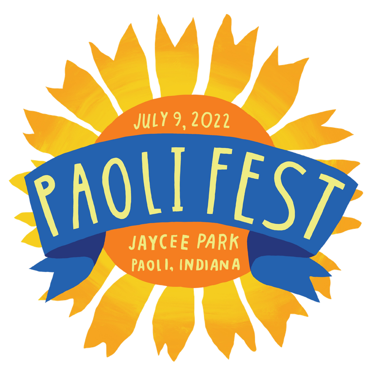
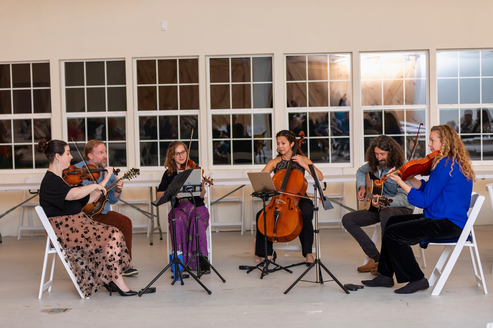
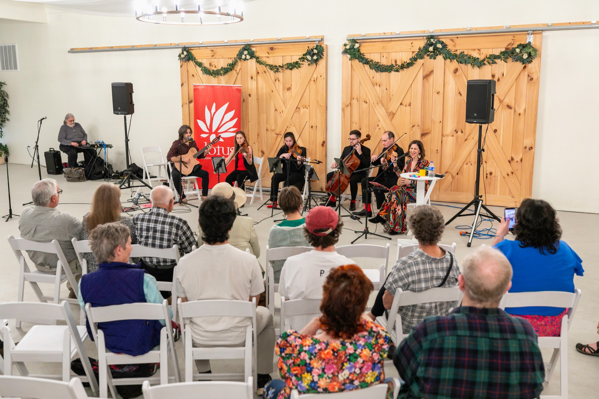
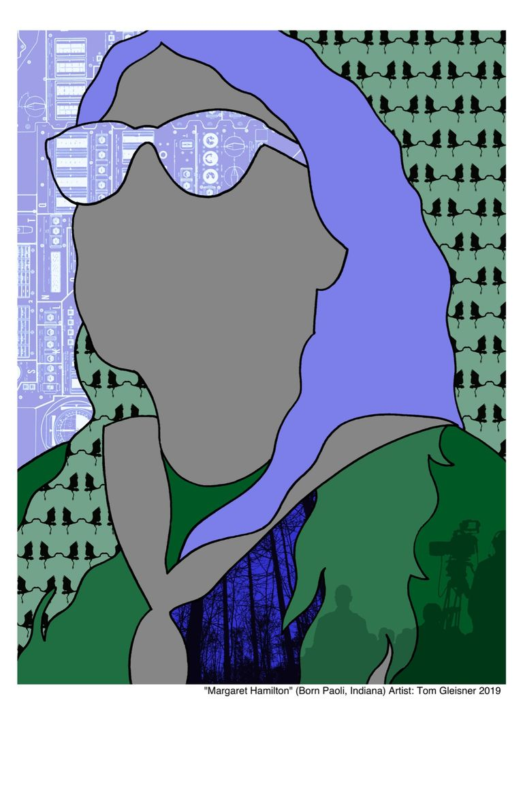

PaoliFest
Our flagship free music and arts festival brought touring artists, local musicians, young artists, and thousands of attendees together in Paoli, Indiana, from 2018 to 2023.
Explore PaoliFestLet Music Speak creates opportunities for people to experience extraordinary musicians and to connect with one another through shared artistic experiences.

PaoliFest began as a free music and arts festival in the small town of Paoli, Indiana.
For five years, musicians, artists, families, and neighbors came together for performances, collaborative art-making, workshops, food, and community.

PaoliFest: Echoes carries that spirit forward through concerts, visiting artists, collaborations, and community outreach throughout Southern Indiana.
Echoes brings exceptional musicians into the region while creating opportunities for audiences to experience music they might otherwise have to travel far from home to hear.
We partner with schools, artists, and community organizations on visiting-artist residencies, workshops, public art, and creative projects that invite people to participate.
Each project is developed with the artists and communities involved, allowing the work to respond to the people and place it serves.

Our flagship free music and arts festival brought touring artists, local musicians, young artists, and thousands of attendees together in Paoli, Indiana, from 2018 to 2023.
Explore PaoliFest
In 2019, Let Music Speak commissioned a public artwork honoring Paoli native Margaret Hamilton, the pioneering computer scientist and lead software engineer for NASA’s Apollo program.

Created in partnership with So In Body, the Heartland Hustle combined movement and community art through a 5K run/walk along a route featuring artwork created by local youth, adults, and professional artists.